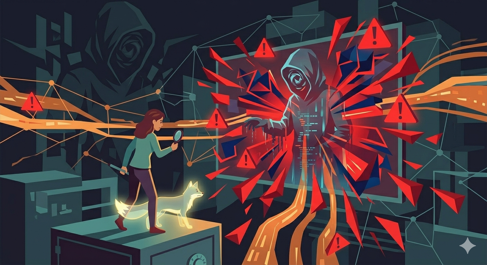

Spot The Warning Signs
Not everything online is what it seems. Many cyber threats don't look dangerous at first—they disguise themselves as normal messages, links, or even people. That's why knowing the warning signs is your first line of defense.
Some of the most common red flags include:
- Suspicious links – URLs that look slightly off (e.g., extra letters or strange domains)
- Too-good-to-be-true offers – Free money, prizes, or deals that feel unrealistic
- Urgent messages – "Act now or your account will be deleted!"
- Unknown senders – Emails or messages from people you don't recognize
- Requests for personal info – Especially passwords, OTPs, or bank details
Hackers rely on one thing: you not paying attention. The moment you slow down and question things, you already have the advantage.
Real-World Application

Many Filipinos today are active online—whether for chatting, shopping, or managing finances—which also means they are constantly exposed to different types of digital interactions. In this environment, the ability to spot warning signs plays a crucial role in everyday decision-making. Simple clues such as unfamiliar senders, messages with poor grammar, unexpected links, or requests for sensitive information can already indicate a possible scam. Learning to pause and evaluate these signs helps users avoid risky situations before any damage is done.
For instance, the Bangko Sentral ng Pilipinas and the National Privacy Commission have consistently reminded the public not to share one-time passwords (OTPs), PINs, or personal details online. There have been multiple cases where individuals received messages that looked legitimate at first glance but contained subtle warning signs—such as slight misspellings in website links or messages creating panic to force immediate action. Those who failed to recognize these red flags often ended up compromising their accounts or losing money. This shows that being observant and critical online is one of the most effective ways to stay safe.
Author's Reflection
As a student and future professional, being aware of online warning signs is more than just personal safety—it's a responsibility. In any career, especially in business, IT, or communications, handling information securely is crucial.
This topic made me realize that cybersecurity isn't just for experts—it's for everyone. By being observant and cautious, I can protect not only myself but also the people and organizations I'll work with in the future.
In a world where everything is digital, awareness is power—and sometimes, noticing one small red flag can prevent a big problem.

"In a world where everything is one click away, make sure your safety is never one step behind."
— Rhoda Mae Federipe